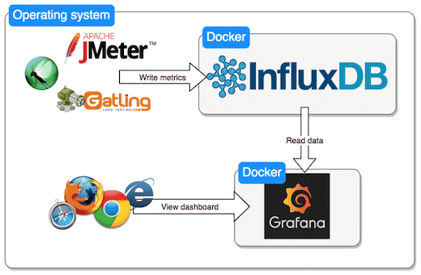
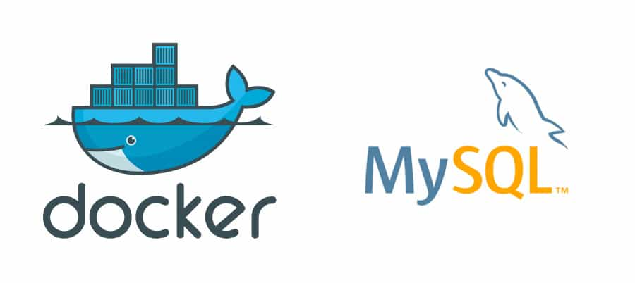
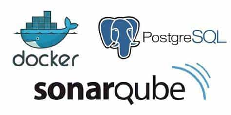
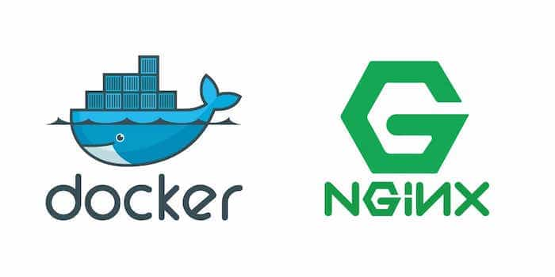

-

InfluxDB 是一个由 InfluxData 开发的开源时序型数据库，专注于海量时序数据的高性能读、高性能写、高效存储与实时分析等，广泛应用于DevOps监控、IoT监控、实时分析等场景。
2021-03-31 19:21:41
-
直接将 jar 包部署到 Docker 中并运行
2021-03-22 18:14:06
-
Docker 安装 WebSphere 8.5.5.12
2021-02-05 10:41:29
-
Docker Registry 是一个无状态，高度可扩展的服务器端应用程序，它存储并允许您分发Docker映像。
2021-02-05 08:33:19
-

Docker 安装 MySQL
2021-02-04 21:30:38
-
Docker 是一个开源的应用容器引擎，让开发者可以打包他们的应用以及依赖包到一个可移植的镜像中，然后发布到任何流行的 Linux或Windows 机器上，也可以实现虚拟化。容器是完全使用沙箱机制，相互之间不会有任何接口。
2021-02-02 20:17:50
-
Docker 安装 Jenkins
2021-01-20 21:36:58
-
Docker 安装 Oracle 12c
2020-12-24 14:44:15
-
SkyWalking: 针对分布式系统的应用性能监控，尤其是针对微服务、云原生和面向容器的分布式系统架构 简介 SkyWalking 是一款开源的应用性能监控系统，包括指标监控，分布式追踪，分布式系统性能诊断。
2020-12-15 18:07:49
-
Docker 安装 WebLogic 12
2020-12-09 13:53:16
-

SonarQube (以前叫 Sonar ) 是一个开源的代码质量管理平台, 专用于持续集成分析和测量技术质量，从项目的组合到方法。
2020-12-07 15:21:13
-
Portainer 是一个轻量级的 Docker 环境管理 UI，可以用来管理 Docker 宿主机和 Docker Swarm 集群。
2020-12-04 21:38:31
-
Docker 安装 PostgreSQL
2020-12-04 21:17:05
-

Docker 安装 Nginx
2020-11-27 04:42:22
-
敏捷团队的首选软件开发工具
2020-11-27 04:41:38
-
Docker 安装 Redis
2020-11-24 20:26:33
-
Nacos 致力于帮助您发现、配置和管理微服务。Nacos 提供了一组简单易用的特性集，帮助您快速实现动态服务发现、服务配置、服务元数据及流量管理。
2020-11-24 20:26:21
-
Docker 安装 Eureka
2020-11-12 08:24:58
-
Docker 是一个开源的应用容器引擎；K8s 是 Kubernetes 的缩写；Kubernetes 对 Docker 容器进行编排、调度更高级更灵活的管理。
2020-11-12 08:19:04
-
Spring Boot 非常适合做微服务，如果再加上 docker ，就完美了！
2020-11-12 05:43:11